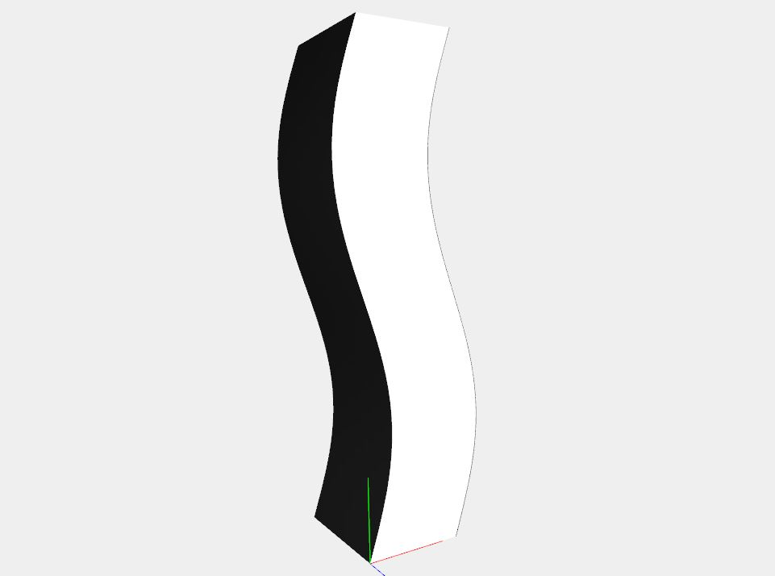

Interiors design by Ettore Sottsass and Shiro Kuramata recreated with PLaSM modeling language.
In this page will be shown some works by design artists Ettore Sottsass and Shiro Kuramata, master designers of the 20th century. These objects are recreated in 3D modeling thanks to the use of PLaSM language.
Ettore Sottsass:
Shiro Kuramata:
Ettore Sottsass

Biography:
Ettore Sottsass (14 September 1917 – 31 December 2007) was an Italian architect and designer of the late 20th century. His body of designs included furniture, jewelry, glass, lighting and office machine design.
Sottsass was born on 14 September 1917 in Innsbruck, Austria, and grew up in Milan, where his father was an architect. He was educated at the Politecnico di Torino in Turin and graduated in 1939 with a degree in architecture. He served in the Italian military and spent much of World War II in a concentration camp in Yugoslavia. After returning home in 1947, he set up his own architectural and industrial design studio in Milan. In 1959 Sottsass began working as a design consultant for Olivetti, designing office equipment, typewriters and furniture. Throughout the 1960s, Sottsass traveled in the US and India and designed more products for Olivetti culminating in the bright red plastic portable Valentine typewriter in 1969, which became a fashion accessory. While continuing to design for Olivetti in the 1960s, Sottsass developed a range of objects which were expressions of his personal experiences traveling in the United States and India. These objects included large altar-like ceramic sculptures and his "Superboxes"; radical sculptural gestures presented within a context of consumer product, as conceptual statement. Covered in bold and colorful, simulated custom laminates, they were precursors to Memphis, a movement which came more than a decade later.
In 1981, Sottsass and an international group of young architects and designers, came together to form the Memphis Group. Memphis was launched with a collection of 40 pieces of furniture, ceramics, lighting, glass and textiles which featured fluorescent colors, slick surfaces, intentionally lop-sided shapes and squiggly laminate patterns. The group's colourful, ironic pieces were hailed as one of the most characteristic examples of Post-modernism in design and the arts.
Whilst the Memphis movement in the eighties attracted enormous attention around the world for its energy and flamboyance, Ettore Sottsass was simultaneously assembling a major design consultancy which he named Sottsass Associati. The studio was established in 1980 and gave the possibility to build architecture on a substantial scale as well as to design for large international industries. Sottsass Associati, primarily an architectural practice, also designed elaborate stores and showrooms for Esprit, identities for Alessi, exhibitions, interiors, consumer electronics in Japan and furniture of all kinds. The studio was based on the cultural guidance of Ettore Sottsass and the work conducted by its many young associates, whom over the years often left to open their own studios. Sottsass Associati are presently based in London and Milan and continue to sustain the work, philosophy and culture of the studio.
The Max Shelf:

Specifications:
- TITLE: Max shelf
- ARTIST: Ettore Sottsass
- WORK DATE: 1987
- CATEGORY: Design
- MATERIALS: stained bird's-eye maple, laminate, terrazzo, Lucite
- MARKINGS: Signed with applied manufacturer’s label to interior: [Memphis Milano Ettore Sottsass 1987 Made In Italy].
- SIZE: h: 86 x w: 53 x d: 14 in / h: 218.4 x w: 134.6 x d: 35.6 cm
Description:
Only thirty-seven examples of the Max shelf have been produced since 1987. Unit features one drop-front bar and two drawers. Signed with applied manufacturer's label to interior: [Memphis Milano Ettore Sottsass 1987 Made In Italy].
Sources:
Decomposition:
The 3D recostruction of the Max Shelf is composed by:- base
- shelvess of various dimensions
- two small drawers
- one big drawer
- two glass columns
Description of the recostruction:
The most complex part of the Max Shelf was its main body: the shelves themselves. For drawing them the object was divided in different tiers, each one created using the SIMPLEX_GRID native function of PLaSM. Two 2D sections were also created to give the black color on the front and the back of the shelf:
The next part was the drawers and the columns. For the latter, the trasparency paramether of the COLOR function came handy to give the impression of glass material.
The base is formed by a collection of triangular blocks of many colors. To recreate it, I used a simplicial complex for the blocks of each color, and then merged them together:
The final piece is visible in the following gallery.
Renderings gallery:


Shiro Kuramata

Biography:
Shiro Kuramata (29 November 1934 – 1 February 1991) is one of Japan's most important designers of the 20th century. Kuramata was mainly known for his use of industrial materials such as wire steel mesh and lucite to create architectural interiors and furniture. Revolutionary pieces such as the "How High the Moon" chair (1986) reflect the emerging dynamism and maturing creativity of postwar Japan, or his Ikabana, lead cristal free hand blown vase, realized by the Vilca[disambiguation needed] from Colle Valdelsa (Siena) Italy, a unique example of fusion, between oriental and occidental cultures. In 1990 the French government awarded Kuramata the distinguished Ordre des Arts et des Lettres in recognition of his outstanding contribution to art and design.
Sofa with Arms:


Specifications:
- TITLE: Sofa with Arms
- ARTIST: Shiro Kuramata
- WORK DATE: 1982
- CATEGORY: Design
- MATERIALS: Chrome, leather, polyurethane
- SIZE: cm. 62 x 90 x 38/65 h / inch 24,50 x 35,50 x 15 / 25,50 h
Small armchair with structure in chromed metal tube. Seat and back padded with multi-density polyurethane foam. Fixed cover in fabrics and leathers of the collection.
Sources:
Decomposition:
The 3D recostruction of the Sofa with Arms is composed by:
- Chassis
- Seat cushion
- Back cushion
Description of the reconstruction:
I started the recostruction with the chassis, using a custom Torus function to draw the curved parts.
Having noticed the sofa's simmetry, I modeled only a half of the chassis, and then used the "mirror scale" function of PLaSM to obtain the whole skeleton:

Then I added the back and the seat: for the first I used the cilinder and two rotational surfaces for its edges. With the second I realized a collection of Bezier curves in order to give the most sensation of "softness" possible.
In this case the simmetry has not been accounted in order to preserve a sense of continuity on the surface of the cushions.
Renderings gallery:
Furniture in Irregular Forms:

Specifications:
- TITLE: Furniture in Irregular Forms
- ARTIST: Shiro Kuramata
- WORK DATE: 1986/1992
- CATEGORY: Design
- MATERIALS: Ebonized and lacquered ash, brushed steel
- SIZE: 17.75"w x 22.5"d x 67"h / 20"w X 19.75"d X 67"h
Sources:
Decomposition:
The 3D recostruction of the Sofa with Arms is composed by:
- External panels
- "Virtual" drawers
- Pulls
- Wheels
Description of the reconstruction:
Upon seeing this furniture, I noticed its peculiar ondular structure, very similar to the SIN function, properly adjusted for the construction.
So I created a parametrical function that, given the number of total points and a proportion degree, returns the points aligned on the SIN function from 0 to 2π.
var generate_sin_points = function (total, degree) {
var a = [];
for (var i = 0; i<=total; i++) {
a[i] = [SIN(i*2*PI/total)/degree,i/degree,0];
}
return a;
}With these points, now I can draw four curves to create the model's corners using the NUBS function of PLaSM.
Then using the curves I formed the four sides:
The drawers were quite a problem, because there was no way to show each one of them distinctly. So I decided to draw "fake" drawers, using a blank front and adding lines to delimitate each drawer from the others.
The sin_points function was again useful for positioning each line on the right latitude and longitude. In fact, the function's "total" parameter represents the number of lines needed to create the fake drawers.
That's the result:
The next step was about the pulls and the wheels, both simple cylinders. With some small tweakings and repositioning they were all placed to create the final model:
The same approach was used to create the second drawer, obviously adjusting the coordinates to respect the different ondular orientation.